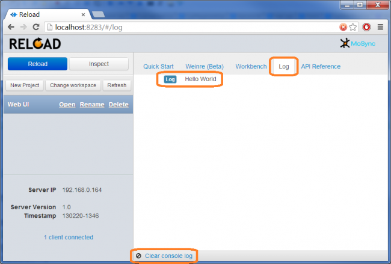
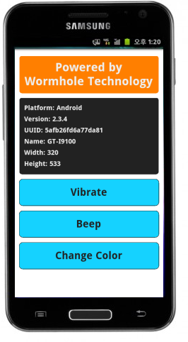
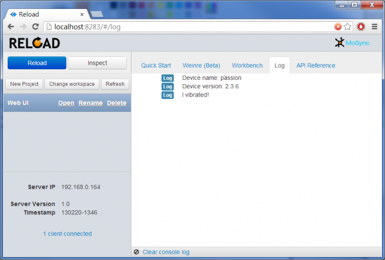
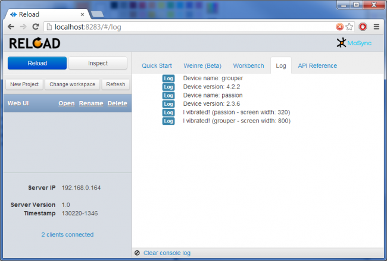

MoSync Reload includes a remote logging function, mosync.rlog, which simplifies the debugging of your applications running on a device. In this tutorial we will show how to work with rlog and see results in the MoSync Reload Developer UI.
Logging is good old debugging method. A problem with mobile devices is that it might be hard to actually output the debug log data somewhere, and to view the data. The mosync.rlog function in Reload is meant to solve this problem, by sending debug log data over the network, from the device to the Reload Developer UI.
The JavaScript syntax is very simple:
mosync.rlog("Hello World");
Here is the result shown under the Log tab in the Reload UI:

Note the Clear console log button at the bottom of the Log view, it is used to clear the log output.
To get started with this tutorial on using mosync.rlog, first read the guide Using MoSync Reload if you have not done that already, and connect at least one client device to the Reload UI/Server.
Now in the Reload Developer UI create a test project:
The Reload project templates are actually working applications, so when the app appears on the device you can play around with it by clicking its buttons.

Now edit the JavaScript code by clicking Open to view the project files and then open index.html in your favourite text editor .
Find the JavaScript function called displayDeviceInfo() and add two mosync.rlog statements to the end of the function:
function displayDeviceInfo()
{
document.getElementById("platform").innerHTML = device.platform;
document.getElementById("version").innerHTML = device.version;
document.getElementById("uuid").innerHTML = device.uuid;
document.getElementById("name").innerHTML = device.name;
document.getElementById("width").innerHTML = screen.width;
document.getElementById("height").innerHTML = screen.height;
mosync.rlog("Device name: " + device.name);
mosync.rlog("Device version: " + device.version);
}
Similiarly, find the vibrate() function and add another mosync.rlog statement there:
function vibrate()
{
navigator.notification.vibrate(500);
mosync.rlog("I vibrated!");
}
Save your index.html file.
Switch to the Log tab in the UI, and reload your app to the client by clicking the Reload button.
You should see the output from the first two mosync.rlog statements which are executed as soon as the app is reloaded:
Try clicking the Reload button again. You will see that every time the project reloads, old output is cleared automatically and output is displayed. To clear the Log manually, just click Clear console log at any time.
Now click the Vibrate button on the client device. This time the mosync.rlog statement in our vibrate() function will be executed and a message is displayed:

The mosync.rlog function works the same way as console.log and has been designed so as not to conflict with it. If you wish, you can override console.log with mosync.rlog in your code like this:
console.log = mosync.rlog;
By providing the device name as part of the log message it is possible to see which device the message comes from. You could also add additional info, like the screen width of the device. For example, if you have two devices, and wish to see on which one the Vibrate button was touched, then write the following code in the vibrate() function:
function vibrate()
{
navigator.notification.vibrate(500);
mosync.rlog(
"I vibrated! ("
+ device.name
+ " - screen width: "
+ screen.width
+ ")");
}
Here is an example of the console output when reloading with two devices connected, and pressing Vibrate on each one of them:

It is worth mentioning that there is also a function in wormhole.js that is called mosync.log(). This function works independently of the Reload Server and UI, and can be used also with an app built using the MoSync SDK. It writes log output using the MoSync sycall maWriteLog(). The syntax is very simple:
mosync.log("Hello World");
The output is sent to the logcat console on Android, and to the Xcode console on iOS. This can be especially useful when debugging iOS apps, since console.log does write any debug output on iOS.
Have you seen the guide on how to use the JavaScript Workbench? It is fun to try :-)